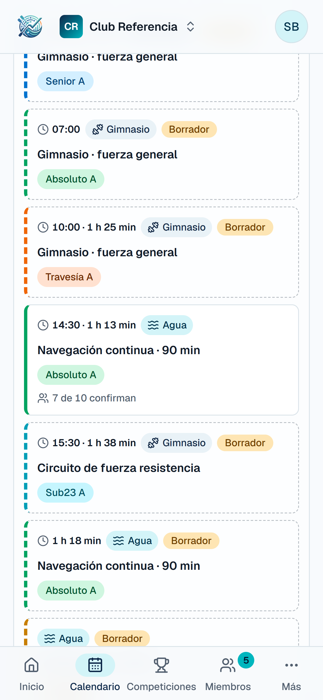
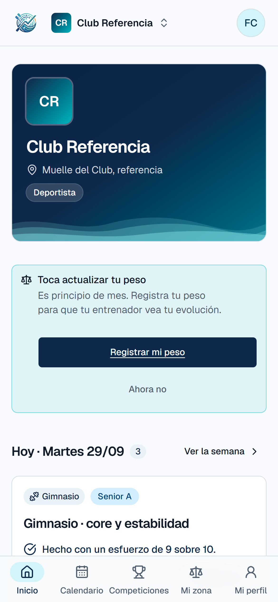

Dorelta1 / 6
Piloto · temporada 2026-27
Seguimos buscando clubs piloto.
Quedan calles libres. Toca para ver a quién buscamos →
- 1El club donde nacióEn el agua
- 2¿Tu club?Calle libre
- 3¿Tu club?Calle libre
- 4¿Tu club?Calle libre
dorelta.es/pruebaGratis y
sin compromiso

Dorelta2 / 6
1 · Para entrenadores
Si entrenas, pruébala con tu grupo.
Publicas la semana, ves cuántos vienen y sabes cómo les fue el entreno.
Dorelta3 / 6
2 · Canal directo
Hablas con quien la programa.
- 1Propones una mejora
- 2Me avisas de un error
- 3Te contesto yo, sin intermediarios
Pedido por los entrenadores, ya en la app:
Dorelta4 / 6
3 · Organización del club
El club, fuera del WhatsApp y del Excel.
Calendario por categorías, asistencia, registros y documentos del club, en un solo sitio.
Dorelta5 / 6
4 · A quién buscamos
Gente activa, con ideas y un equipo.
- +Entrenas o diriges un grupode banco móvil, fijo o de mar
- +Tu grupo es adultode momento, las cuentas son para mayores de edad
- +Quieres decir qué faltay verlo construido
dorelta.es/pruebaEnlace en
la bio

Dorelta6 / 6
¿Conoces a alguien?
Pásaselo a un entrenador.
Si sabes de alguien que lleve un equipo de remo, compártele esta historia o mándale el enlace.
dorelta.es/pruebaGracias por
la difusión
Dorelta1 / 6
Piloto · temporada 2026-27
Seguimos buscando clubs piloto.
Quedan calles libres. Desliza para ver a quién buscamos.
- 1El club donde nacióEn el agua
- 2¿Tu club?Calle libre
- 3¿Tu club?Calle libre
- 4¿Tu club?Calle libre
dorelta.es/pruebaGratis y sin compromiso
Desliza →
Dorelta2 / 6
1 · Para entrenadores
Si entrenas, pruébala con tu grupo.
Publicas la semana, ves cuántos vienen y sabes cómo les fue el entreno.
dorelta.es/prueba
Dorelta3 / 6
2 · Canal directo
Hablas con quien la programa.
- 1Propones una mejora
- 2Me avisas de un error
- 3Te contesto yo, sin intermediarios
Pedido por los entrenadores, ya en la app:
Dorelta4 / 6
3 · Organización del club
El club, fuera del WhatsApp y del Excel.
Calendario por categorías, asistencia, registros y documentos del club, en un solo sitio.
Dorelta5 / 6
4 · A quién buscamos
Gente activa, con ideas y un equipo.
- +Entrenas o diriges un grupode banco móvil, fijo o de mar
- +Tu grupo es adultode momento, las cuentas son para mayores de edad
- +Quieres decir qué faltay verlo construido
dorelta.es/pruebaDesliza →
Dorelta6 / 6
¿Conoces a alguien?
Pásaselo a un entrenador.
Si sabes de alguien que lleve un equipo de remo, compártele este post o mándale el enlace.
dorelta.es/prueba